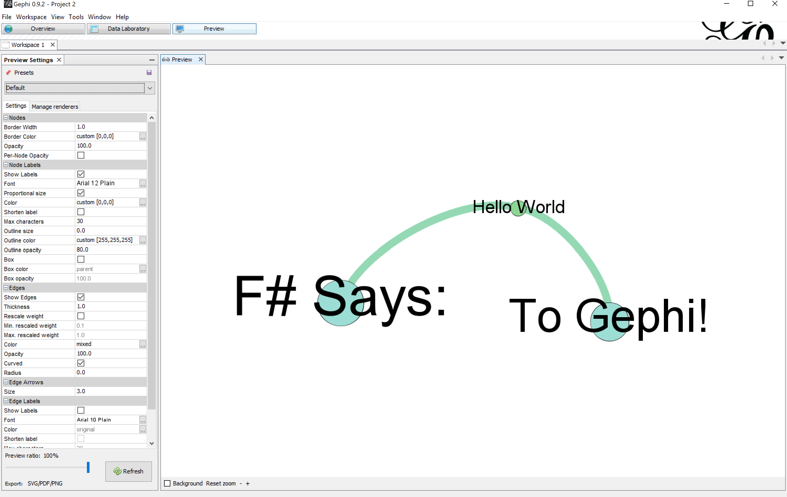

Simple Network streaming example
This is a small "hello world" example building on the node/edge types and converters introduced in the Grammar docs. Adjust those types to your liking.
1: 2: 3: 4: 5: 6: 7: 8: 9: 10: 11: 12: 13: 14: 15: 16: 17: 18: 19: 20: 21: 22: 23: 24: 25: 26: 27: 28: 29: 30: 31: 32: 33: 34: 35: 36: 37: 38: 39: 40: 41: 42: 43: |
|
Now its time to deliver a message from F# to Gephi. The following simple network will consist of three nodes and 2 edges:
1: 2: 3: 4: 5: 6: 7: 8: 9: 10: 11: 12: |
|
To add the nodes/edges to the graph, we apply the prepared addMyNode/addMyEdge functions to the nodes.
Note that the result is either a Success or Failure type, so you can add error handling.
The following blocks of code should return an empty list if streaming all nodes/edges is successfull or yield the resulting RestfulAux.Error type otherwise.
1: 2: 3: 4: 5: 6: 7: 8: 9: 10: 11: 12: 13: 14: 15: 16: 17: 18: 19: 20: 21: |
|
The resulting network should look like this:

namespace FSharpGephiStreamer
type MyNode =
{Id: int;
Label: string;
Size: float;
Data: string;}
Record type that represents a custom node
{Id: int;
Label: string;
Size: float;
Data: string;}
Record type that represents a custom node
MyNode.Id: int
Multiple items
val int : value:'T -> int (requires member op_Explicit)
--------------------
type int = int32
--------------------
type int<'Measure> = int
val int : value:'T -> int (requires member op_Explicit)
--------------------
type int = int32
--------------------
type int<'Measure> = int
MyNode.Label: string
Multiple items
val string : value:'T -> string
--------------------
type string = System.String
val string : value:'T -> string
--------------------
type string = System.String
MyNode.Size: float
Multiple items
val float : value:'T -> float (requires member op_Explicit)
--------------------
type float = System.Double
--------------------
type float<'Measure> = float
val float : value:'T -> float (requires member op_Explicit)
--------------------
type float = System.Double
--------------------
type float<'Measure> = float
Multiple items
MyNode.Data: string
--------------------
namespace Microsoft.FSharp.Data
MyNode.Data: string
--------------------
namespace Microsoft.FSharp.Data
type MyEdge =
{Id: int;
Source: int;
Target: int;
Weight: float;}
Record type that represents a custom edge
{Id: int;
Source: int;
Target: int;
Weight: float;}
Record type that represents a custom edge
MyEdge.Id: int
MyEdge.Source: int
MyEdge.Target: int
MyEdge.Weight: float
val nodeConverter : node:MyNode -> Grammar.Attribute list
converts a MyNode type to a list of grammar attributes
converts a MyNode type to a list of grammar attributes
val node : MyNode
module Grammar
from FSharpGephiStreamer
from FSharpGephiStreamer
type Attribute =
| Size of float
| Color of Color
| EdgeType of EdgeDirection
| PositionX of float
| PositionY of float
| PositionZ of float
| Label of string
| LabelSize of float
| LabelColor of Color
| LabelVisible of bool
...
| Size of float
| Color of Color
| EdgeType of EdgeDirection
| PositionX of float
| PositionY of float
| PositionZ of float
| Label of string
| LabelSize of float
| LabelColor of Color
| LabelVisible of bool
...
union case Grammar.Attribute.Label: string -> Grammar.Attribute
union case Grammar.Attribute.Size: float -> Grammar.Attribute
union case Grammar.Attribute.Color: Colors.Color -> Grammar.Attribute
module Colors
from FSharpGephiStreamer
from FSharpGephiStreamer
module Table
from FSharpGephiStreamer.Colors
from FSharpGephiStreamer.Colors
module StatisticalGraphics24
from FSharpGephiStreamer.Colors.Table
from FSharpGephiStreamer.Colors.Table
val getRandomColor : unit -> Colors.Color
union case Grammar.Attribute.UserDef: string * obj -> Grammar.Attribute
MyNode.Data: string
val edgeConverter : edge:MyEdge -> Grammar.Attribute list
converts a MyEdge type to a list of grammar attributes
converts a MyEdge type to a list of grammar attributes
val edge : MyEdge
union case Grammar.Attribute.EdgeType: Grammar.EdgeDirection -> Grammar.Attribute
type EdgeDirection =
| Directed
| Undirected
static member convert : (EdgeDirection -> bool)
| Directed
| Undirected
static member convert : (EdgeDirection -> bool)
union case Grammar.EdgeDirection.Undirected: Grammar.EdgeDirection
module Office
from FSharpGephiStreamer.Colors.Table
from FSharpGephiStreamer.Colors.Table
val grey : Colors.Color
val addMyNode : node:MyNode -> Either<string,RestfulAux.Error>
Adds a node of type MyNode using the node converter to the gephi graph
Adds a node of type MyNode using the node converter to the gephi graph
module Streamer
from FSharpGephiStreamer
from FSharpGephiStreamer
val addNode : nodeConverter:Streamer.NodeConverter<'node> -> nodeId:obj -> ('node -> Either<string,RestfulAux.Error>)
val addMyEdge : edge:MyEdge -> Either<string,RestfulAux.Error>
Adds an edge of type MyEdge using the edge converter to the gephi graph
Adds an edge of type MyEdge using the edge converter to the gephi graph
val addEdge : edgeConverter:Streamer.EdgeConverter<'edge> -> edgeId:obj -> sourceId:obj -> targetId:obj -> ('edge -> Either<string,RestfulAux.Error>)
val nodes : MyNode list
namespace Microsoft.FSharp.Data
val edges : MyEdge list
val nodeAddResult : RestfulAux.Error list
Multiple items
module List
from Microsoft.FSharp.Collections
--------------------
type List<'T> =
| ( [] )
| ( :: ) of Head: 'T * Tail: 'T list
interface IReadOnlyList<'T>
interface IReadOnlyCollection<'T>
interface IEnumerable
interface IEnumerable<'T>
member GetSlice : startIndex:int option * endIndex:int option -> 'T list
member Head : 'T
member IsEmpty : bool
member Item : index:int -> 'T with get
member Length : int
member Tail : 'T list
...
module List
from Microsoft.FSharp.Collections
--------------------
type List<'T> =
| ( [] )
| ( :: ) of Head: 'T * Tail: 'T list
interface IReadOnlyList<'T>
interface IReadOnlyCollection<'T>
interface IEnumerable
interface IEnumerable<'T>
member GetSlice : startIndex:int option * endIndex:int option -> 'T list
member Head : 'T
member IsEmpty : bool
member Item : index:int -> 'T with get
member Length : int
member Tail : 'T list
...
val choose : chooser:('T -> 'U option) -> list:'T list -> 'U list
union case Either.Success: 'TSuccess -> Either<'TSuccess,'TFailure>
val s : string
union case Option.None: Option<'T>
union case Either.Failure: 'TFailure -> Either<'TSuccess,'TFailure>
val f : RestfulAux.Error
union case Option.Some: Value: 'T -> Option<'T>
val edgeAddResults : RestfulAux.Error list
val node : MyEdge